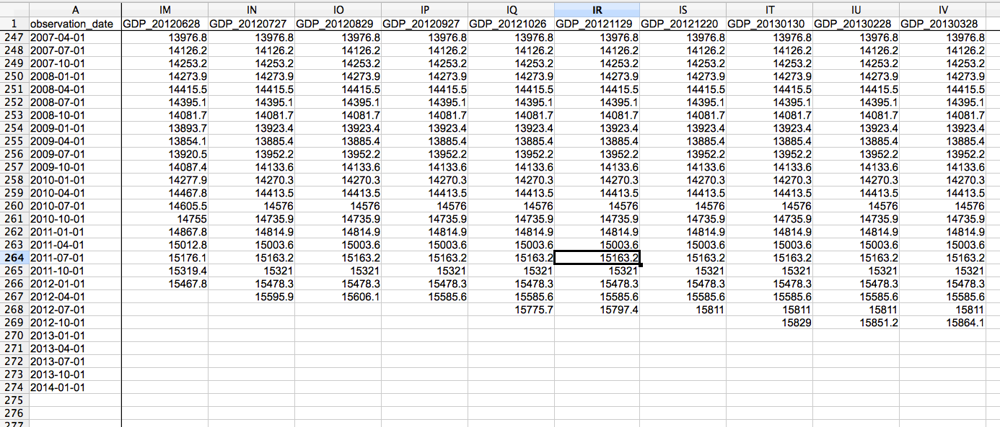

Real-time Data Structures
Contents
Sample file
Below is an example of a real-time data file with data vintages in columns stretching from 2012 into 2013. The vintage dates are displayed in the first row; the dates of the time series observations contained in the data vintages are shown in the first column (here, from 2007 to 2014).

Function to load real-time data
The real time data structure must be in the format specified in the utility function loadRealTimeDataFromCsv.
help loadRealTimeDataFromCsv
loadRealTimeDataFromCsv Load data from an ALFRED formatted csv spreadsheet
and return a Tsdata object.
The data is found in ALFRED csv spreadsheets in the location
dataPath/mnemonic.csv. This raw data must come in the following format:
observation_date GDP_19911204 GDP_19911220
1946-01-01 123.3 123.4
1946-04-01 124.5 134.67
1946-07-01 etc etc
1946-10-01 etc
Where the series name identifier in the first row is in the format
seriesName_YYYYMMDD, eg. for GDP of vintage 20th Decemeber 1991 the column
header would be GDP_19911220.
N.B. Missing values should be blank spaces, if anything else will cause
problems with the reading from the csv file. Don't blame us blame Matlab for
not having easy IO handling.
Input:
inVintageDate [numeric] Must be of YYYYMMDD format.
dataPath [string]
A string containing the path to the xls spreadsheet (but not
including the name of the sheet itself)
mnemonic [string]
Variable name (must be the same as the name of the xls spreadsheet)
freq [string]
A string identifying the freqency of the data to be loaded
Output:
d [Tsdata]
A time series data object
Usage:
d = loadRealTimeDataFromCsv(inVintageDate, freq, dataPath, mnemonic)